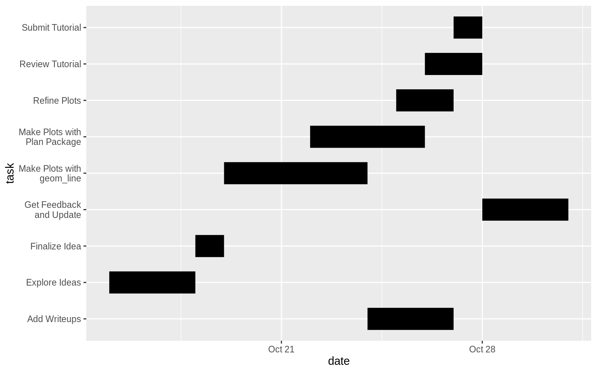
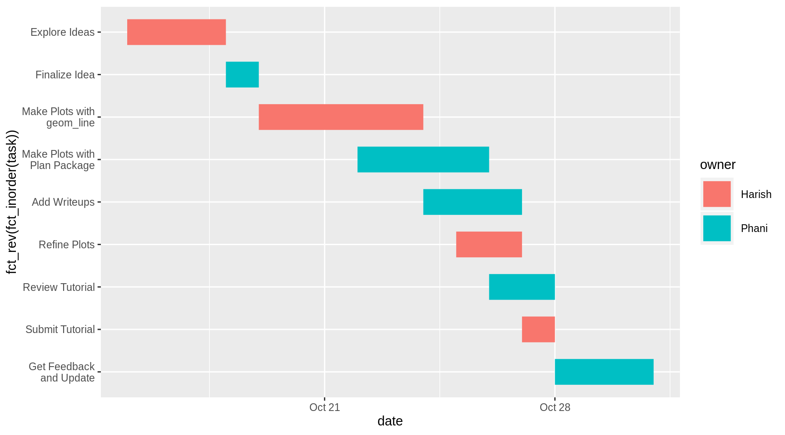
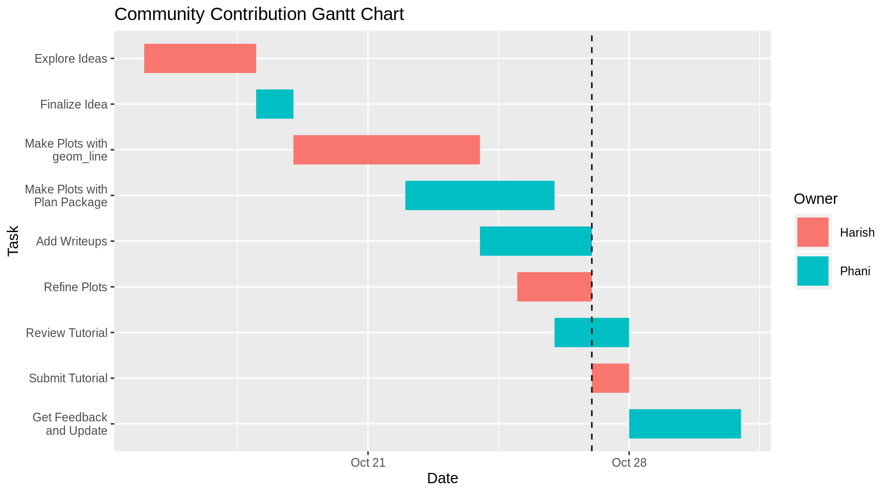
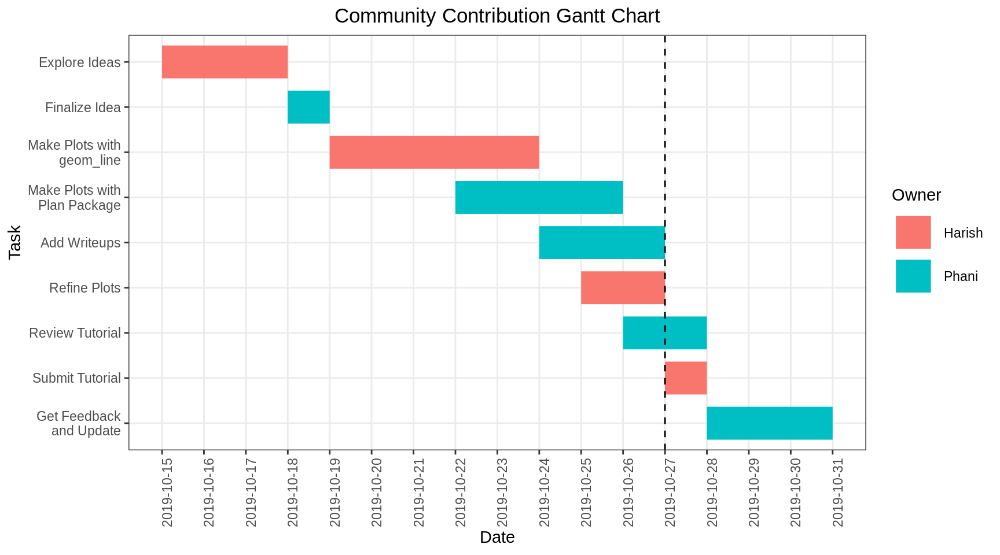
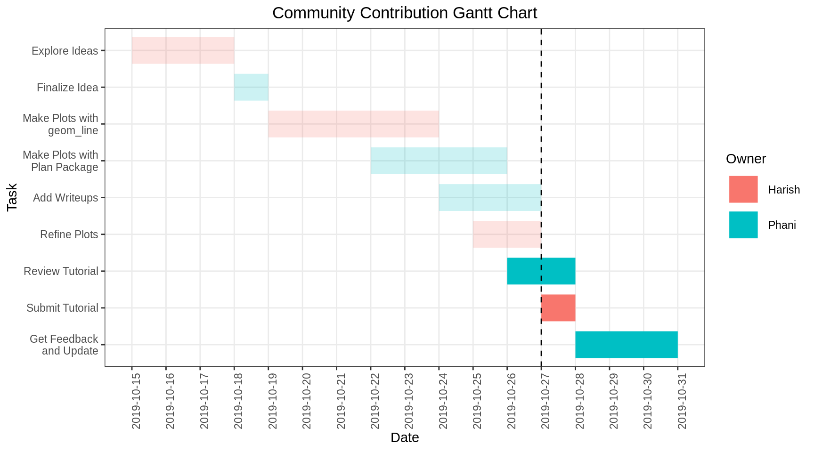
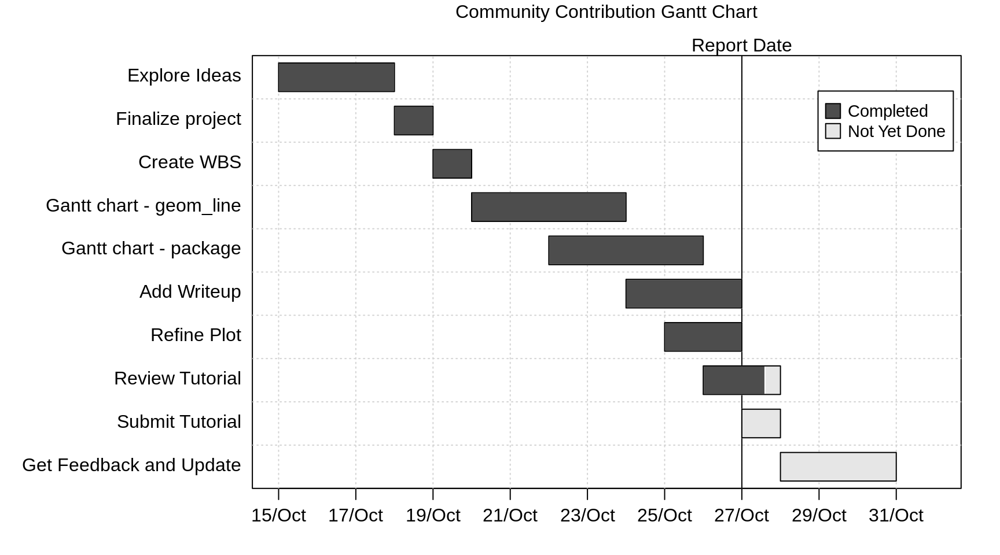
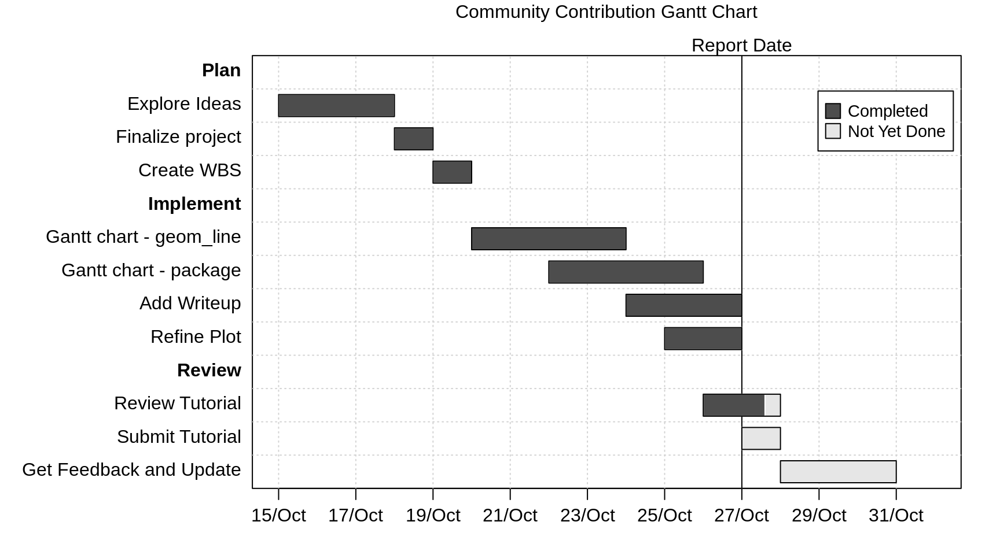
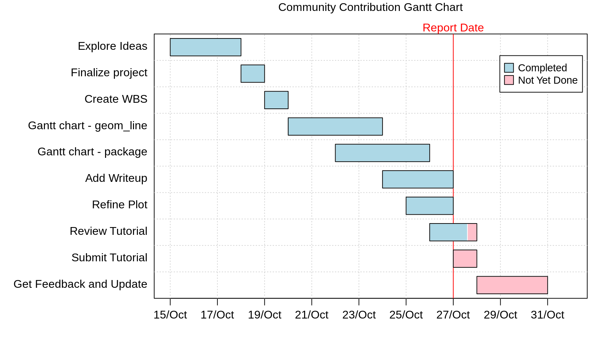

Chapter 5 Gantt charts
Phani Kumar Valasa and Harish Babu Visweswaran
A Gantt chart is a visual view of tasks scheduled over time. Gantt charts are used for planning projects and are a useful way of showing what work is scheduled to be done on a specific day. The other elements Gantt charts may provide include the start and end dates of a task/project, the owner(s) of each task, task dependencies, completion status, task grouping and more. In this write-up, we will be focusing only on some of those elements.
This can be a useful tutorial for students interested in representing their project plans (think Final Project). We talk about two ways to plot Gantt Charts in R - one using geom_line and playing with the aesthetics and the other using a package called plan. We will compare the two methods in this brief tutorial.
Let’s jump right into it. We first load the necessary packages for plotting a Gantt Chart. We actually just need to load the tidyverse package for the plot using geom_line. That will in turn load ggplot2, forcats and all other packages we need. In addition, we need the plan package for the second part of the tutorial.
5.1 Using geom_line
We clearly need to have our data ready before we learn how to make the plot. For the first part of this tutorial, we assume the data is in a dataframe. We can either import the data from an excel or a csv or we can just create the dataframe explicitly inside R if you have a manageable number of tasks. Let’s create a dataframe inside R for this tutorial.
df <- data.frame(task=c("Explore Ideas", "Finalize Idea", "Make Plots with\n geom_line", "Make Plots with\n Plan Package", "Add Writeups", "Refine Plots", "Review Tutorial", "Submit Tutorial", "Get Feedback\n and Update"),
start=c("2019-10-15", "2019-10-18", "2019-10-19", "2019-10-22", "2019-10-24", "2019-10-25", "2019-10-26", "2019-10-27", "2019-10-28"),
end=c("2019-10-18", "2019-10-19", "2019-10-24", "2019-10-26", "2019-10-27", "2019-10-27", "2019-10-28", "2019-10-28", "2019-10-31"),
owner=c("Harish", "Phani", "Harish", "Phani", "Phani", "Harish", "Phani", "Harish", "Phani"))Printing the first few rows of the dataframe:
## task start end owner
## 1 Explore Ideas 2019-10-15 2019-10-18 Harish
## 2 Finalize Idea 2019-10-18 2019-10-19 Phani
## 3 Make Plots with\n geom_line 2019-10-19 2019-10-24 Harish
## 4 Make Plots with\n Plan Package 2019-10-22 2019-10-26 Phani
## 5 Add Writeups 2019-10-24 2019-10-27 Phani
## 6 Refine Plots 2019-10-25 2019-10-27 HarishConverting the dates from factor type to date type:
YYYY-MM-DD is the preferred format for dates but if you have other formats, you can still use the as.Date function to convert them to dates by passing in the tryFormats argument as a vector Ex: tryFormats = c(“%Y-%m-%d”, “%Y/%m/%d”) will check if the Date fits any of the passed formats.
In order for us to be able to use the line plot, we need to tidy the data - the start and the end date need to be in the same column. We will use the gather function from tidyr to transform the dataframe. We add another column that indicates whether the date is the start date or the end date.
The trick in using a line plot for the Gantt chart is to make the line very thick so that it looks like a bar. If we then have a start and end value for the bar, we should be able to get what we need. We will flip the coordinates so that the bars are horizontal (which is more in line with how a Gantt chart looks).
We will start with a basic plot using geom_line and then make updates until we are happy with the plot. To begin with, we will plot the task name on the x-axis and the date on the y-axis and then flip the coordinates. We will adjust the size parameter to get a bar instead of a line

The plot is directionally fine but we observe a few issues. The tasks are not in the order we entered them in. We can fix that by using the fct_inorder function from the forcats package (the task field is a factor and forcats provides many functions that help with factor ordering). Since we are dealing with a horizontal line plot, the plot starts from the bottom (the first value passed will be at the bottom and the last value passed will be at the top). Since we want to read out plot from the top, we will reverse the order using fct_rev. Additionally, we want to indicate the owner of each task. We will do that by passing the color argument to geom_line.
ggplot() +
geom_line(data=df_tidy, mapping=aes(x=fct_rev(fct_inorder(task)), y=date, color=owner), size=10) +
coord_flip() 
Our plot looks pretty good now. Gantt charts optionally have vertical line markers that indicate the current date. This serves as a frame of reference for members to evaluate whether they are on track to complete the project in time. Let’s add this using geom_hline before the coordinate flip. Let’s use a dashed black line to represent this. Normally we would use the Sys.Date() function from base R to get the current date but here we hardcode the date to 2019-10-27, so that rerunning the code at a later date will still display the line. We will also add some labels.
ggplot() +
geom_line(data=df_tidy, mapping=aes(x=fct_rev(fct_inorder(task)), y=date, color=owner), size=10) +
geom_hline(yintercept=as.Date("2019-10-27"), colour="black", linetype="dashed") +
coord_flip() +
labs(title="Community Contribution Gantt Chart",
x = "Task",
y = "Date",
colour = "Owner") 
We now have a version of the Gantt Chart that we can use. We will now tidy up the graph by updating the date ticks to make them more frequent and lining up the grid lines with the labeled dates. We will also update the theme to the bw theme to get a cleaner look.
ggplot() +
geom_line(data=df_tidy, mapping=aes(x=fct_rev(fct_inorder(task)), y=date, color=owner), size=10) +
geom_hline(yintercept=as.Date("2019-10-27"), colour="black", linetype="dashed") +
coord_flip() +
scale_y_date(date_breaks = "1 day") +
labs(title="Community Contribution Gantt Chart",
x = "Task",
y = "Date",
colour = "Owner") +
theme_bw() +
theme(axis.text.x = element_text(angle = 90),
panel.grid.minor = element_line(colour="white", size=0.5),
legend.position="right",
plot.title = element_text(hjust = 0.5))
Finally, let’s say we want a less instrusive way to indicate that a certain task has been completed. One option is to make the completed bars transparent and the let the incomplete bars be the way they are. For this, we need to have the status of the task in another column. Let’s add a column named completed to the original dataframe and enter values of 1 for completed tasks and 0 for incomplete tasks. We will then use the completed column inside the aesthetics as the argument for the alpha parameter. We set alpha to 0.2 for incomplete tasks and 1 for complete tasks using the scale_alpha_discrete function. Additionally, we get a legend that is not super helpful - we remove it by passing guide=“none” inside the scale_alpha_discrete function. This is not the best possible way to visualize the status but it works.
df_completed <- df %>%
mutate(completed = factor(c(rep(1, 6), rep(0, 3))))
df_tidy <- df_completed %>%
gather(key=date_type, value=date, -task, -owner, -completed)
ggplot() +
geom_line(data=df_tidy, mapping=aes(x=fct_rev(fct_inorder(task)), y=date, color=owner, alpha=completed), size=10) +
geom_hline(yintercept=as.Date("2019-10-27"), colour="black", linetype="dashed") +
coord_flip() +
scale_alpha_discrete(range=c(1, 0.2), guide="none") +
scale_y_date(date_breaks = "1 day") +
labs(title="Community Contribution Gantt Chart",
x = "Task",
y = "Date",
colour = "Owner") +
theme_bw() +
theme(axis.text.x = element_text(angle = 90),
panel.grid.minor = element_line(colour="white", size=0.5),
legend.position="right",
plot.title = element_text(hjust = 0.5))
5.2 Using the package ‘plan’
Now we show how to create a Gantt chart using the ‘plan’ package. It has predefined methods to read the data and plot the gantt chart. Here is the reference to the package for more details: https://cran.r-project.org/web/packages/plan/plan.pdf
The data used is similar to the one we used for creating the charts using geom_line. We’ll be showing two ways to read the data. One is adding the tasks manually to the ‘gantt’ object by using the ‘ganttAddTask’ method. The other is to read the tasks from an existing file.
Let’s explore the first method of adding tasks via ‘ganttAddTask’ in our tutorial project. This method takes the task description, start date, end date and percentage completion as input. As you see below, we need to add the percentage completion of the task as with any project planning. The ‘plot’ takes care of creating a Gantt chart from this object.
g <- new("gantt")
g <- ganttAddTask(g, "Explore Ideas","2019-10-15","2019-10-18",done=100 )
g <- ganttAddTask(g, "Finalize project","2019-10-18","2019-10-19",done=100 )
g <- ganttAddTask(g, "Create WBS","2019-10-19","2019-10-20",done=100 )
g <- ganttAddTask(g, "Gantt chart - geom_line","2019-10-20","2019-10-24",done=100 )
g <- ganttAddTask(g, "Gantt chart - package","2019-10-22","2019-10-26",done=100 )
g <- ganttAddTask(g, "Add Writeup","2019-10-24","2019-10-27",done=100 )
g <- ganttAddTask(g, "Refine Plot","2019-10-25","2019-10-27",done=100 )
g <- ganttAddTask(g, "Review Tutorial","2019-10-26","2019-10-28",done=80 )
g <- ganttAddTask(g, "Submit Tutorial","2019-10-27","2019-10-28",done=0 )
g <- ganttAddTask(g, "Get Feedback and Update","2019-10-28","2019-10-31",done=0 )
plot(g, ylabel=list(font=ifelse(is.na(g[["start"]]), 2, 1)),
event.time="2019-10-27", event.label="Report Date",
main = "Community Contribution Gantt Chart")
legend("topright", pch=22, pt.cex=2, cex=0.9, pt.bg=gray(c(0.3, 0.9)),
border="black",
legend=c("Completed", "Not Yet Done"), bg="white", xpd=TRUE)
In addition to the above, using the package, we are also able to categorize sections of tasks into groups. Here, we have split the tasks into groups named Plan, Implement and Review for demonstration. The interface is simple - we just need to include a task with just the name of the task.
g <- new("gantt")
g <- ganttAddTask(g, "Plan")
g <- ganttAddTask(g, "Explore Ideas","2019-10-15","2019-10-18",done=100 )
g <- ganttAddTask(g, "Finalize project","2019-10-18","2019-10-19",done=100 )
g <- ganttAddTask(g, "Create WBS","2019-10-19","2019-10-20",done=100 )
g <- ganttAddTask(g, "Implement")
g <- ganttAddTask(g, "Gantt chart - geom_line","2019-10-20","2019-10-24",done=100 )
g <- ganttAddTask(g, "Gantt chart - package","2019-10-22","2019-10-26",done=100 )
g <- ganttAddTask(g, "Add Writeup","2019-10-24","2019-10-27",done=100 )
g <- ganttAddTask(g, "Refine Plot","2019-10-25","2019-10-27",done=100 )
g <- ganttAddTask(g, "Review")
g <- ganttAddTask(g, "Review Tutorial","2019-10-26","2019-10-28",done=80 )
g <- ganttAddTask(g, "Submit Tutorial","2019-10-27","2019-10-28",done=0 )
g <- ganttAddTask(g, "Get Feedback and Update","2019-10-28","2019-10-31",done=0 )
plot(g, ylabel=list(font=ifelse(is.na(g[["start"]]), 2, 1)),
event.time="2019-10-27", event.label="Report Date",
main = "Community Contribution Gantt Chart")
legend("topright", pch=22, pt.cex=2, cex=0.9, pt.bg=gray(c(0.3, 0.9)),
border="black",
legend=c("Completed", "Not Yet Done"), bg="white", xpd=TRUE)
The below is the second method of reading the tasks from a file. Here is the format of the file used, for it be read by ‘read.gantt’ method.
Key,Description,Start,End,Done,NeededBy
1,Explore Ideas,2019-10-15,2019-10-18,100,
2,Finalize project,2019-10-18,2019-10-19,100,
3,Create WBS,2019-10-19,2019-10-20,100,
4,Gantt chart - package,2019-10-20,2019-10-24,100,
5,Gantt chart - geom_line,2019-10-22,2019-10-26,100,
6,Add Writeup,2019-10-24,2019-10-27,100,
7,Refine Plot,2019-10-25,2019-10-27,100,
8,Review Tutorial,2019-10-26,2019-10-28,80,
9,Submit Tutorial,2019-10-27,2019-10-28,0,
10,Get Feedback and Update,2019-10-28,2019-10-31,0,We can also add the dependency on other tasks in the above file using the NeededBy column but we haven’t used it in this example (we’ve left it blank). However there is no provision to add the owner of the task/resource who will be working on the task. We’ve explored this in creation of gantt_chart with ‘geom_line’.
Once the data is read using ‘read.gantt’ method, the output object is used by ‘plot’ to create the Gantt chart. You’ll notice the code is simple and doesn’t look like a hack to produce the chart. Note that the file is hosted on github - so running the below script as is should work.
gt_object <- read.gantt("https://raw.githubusercontent.com/harish-cu/cc19/tasks_file/tasks.csv")
plot(gt_object,event.label='Report Date',event.time='2019-10-27',
col.event=c("red"),
col.done=c("lightblue"),
col.notdone=c("pink"),
main="Community Contribution Gantt Chart"
)
legend("topright", pch=22, pt.cex=2, cex=0.9, pt.bg=c("lightblue", "pink"),
border="black",
legend=c("Completed", "Not Yet Done"), bg="white", xpd=TRUE)
From the above, as you see, it is easy to plot a Gantt chart using the package. This provides an easy way of looking at what has been completed and pending. It calculates the proportion of the line to color from the percentage completion we provide. However it doesn’t have the ability to color/segment the chart based on the resources working on those tasks.
The annotations on the chart (from ‘plot’) needs a little work as the labelling is not as straight forward compared to what we get with geom_line.
And any customizations on the Gantt chart such as segmenting the chart by ‘Resource’, providing an effort based chart rather than duration etc., needs significant work and may not be directly produced by this package.
As long as the output meets your requirements and the tasks can be maintained in the format required by this package, ‘plan’ provides an excellent solution to produce quick Gantt charts. However if your requirements needs additional customizations, any custom solution built using geom_line would provide a better alternative.
Note: There are other packages like Candela and DiagrammeR that we have not explored in this tutorial but might be of interest as they provide similar capabilities to draw Gantt Charts
Sources:
https://www.molecularecologist.com/2019/01/simple-gantt-charts-in-r-with-ggplot2-and-the-tidyverse/
https://cran.r-project.org/web/packages/plan/plan.pdf